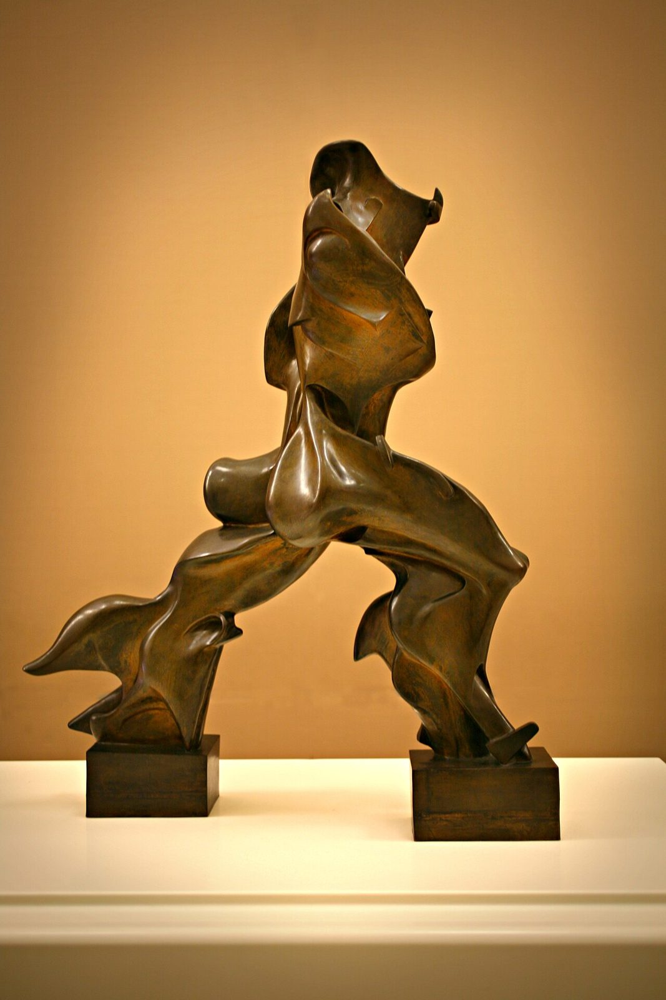

References / Other / 483
Unique Forms of Continuity in Space
Umberto Boccioni’s striding figure, whose muscles stream backward in flame-like planes, as if the body were shaped by the air it moves through.
- Source
- Wikimedia Commons: Umberto Boccioni Forme uniche nella continuità dello spazio 1913.jpg, photograph by Paolobon140
- Creator
- Umberto Boccioni
- Made
- 1913 (plaster); the Milan bronze cast 1949 according to Wikipedia
- Style
- Italian Futurism (agent-proposed, not yet reviewed by a person)
- Moods
- Fast, aggressive, mechanical
- Evidence
- Downloaded and inspected a photograph by the Commons user Paolobon140, 8 December 2015 (original 2912 × 4368 px; a 1067 × 1600 px rendering was inspected and stored). The file description says it shows the cast exhibited at the Museo del Novecento, Milan. Several casts exist; this record describes that cast. The photo has warm lighting, so the bronze color is not reliable.
- Reviewed
- Rights
- Open license, stored. License: CC-BY-SA-4.0. Rights policy

Context
The original plaster of 1913 is in the Museu de Arte Contemporânea da Universidade de São Paulo. Bronze casts were made in 1931 (one at MoMA), in 1949 (one at the Metropolitan Museum of Art and one at the Museo del Novecento, Milan), and in 1972 (Tate, and eight more cast from a 1949 bronze). The height is about 111 cm. Wikipedia: Unique Forms of Continuity in Space.
The sculpture is on the obverse of the Italian 20-cent euro coin. Wikipedia.
Observed
- A headless or helmeted figure strides forward to the right, its rear leg stretched far back; each foot stands on its own rectangular block.
- The calves and thighs flare backward into curved, blade-like fins, like flames or the wake of the motion.
- The torso is made of hollow, overlapping curved planes; a short flat projection juts from the chest.
- The surfaces are smooth and polished, with sharp edges where planes meet.
- The photograph shows the sculpture on a white plinth against a plain warm wall.
Why it belongs
The figure does not show a body and then its trail; the trail is part of the body. This is the sculptural equivalent of Boccioni’s painted interpenetration of object and space in Dynamism of a Cyclist.
Its smooth, aerodynamic planes link it with the streamlined forms of later machine design.
Borrow
Show speed by stretching the back edge of a form into trailing fins.
Let a form open into hollow planes so space passes through it.
Set a dynamic silhouette on two plain rectangular bases for contrast.
Measured
Machine-extracted by tools/image-traits.py on . Full measurement.
- Mean chroma
- 0.39
- Palette
- #e2a55a 16%
- #9e6f3a 15%
- #bd884a 14%
- #442d0a 9%
- #f0b364 6%
- #825d2f 4%
- #fbe0af 4%
- #d29248 3%

